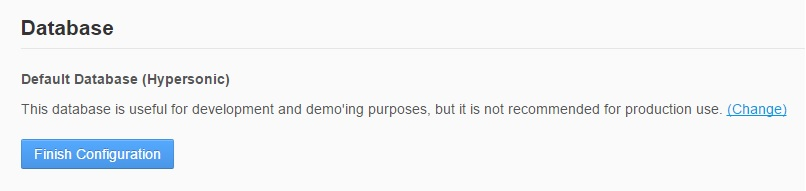
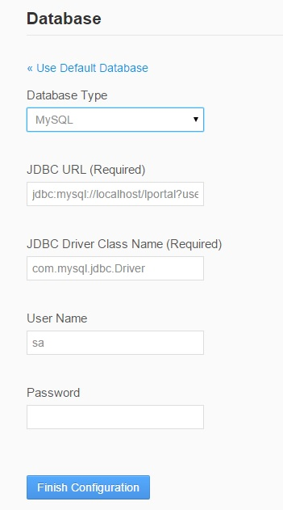

(1) Download Liferay Portal 6.2 or greater (select tomcat bundled) ~281MB
reference :
https://www.liferay.com/downloads/liferay-portal/available-releases
(2) Unzip the file
(3) Go to the bin folder (liferay-portal-6.2-ce-ga4 -> tomcat-7.0.42 -> bin)
I am using Windows 8.1 (actually I am not a fan of windows :) ) and my bin folder path is
E:\LIFERAY\liferay-portal-6.2-ce-ga4\tomcat-7.0.42\bin
(4) To start the server ,
If you are on windows ,
Double click on startup.bat file or catalina.bat file
If you are on Linux
On command prompt run startup.sh or catalina.sh
Hint : If you check startup file content you can find that it always points to the catalina file
(5) Configuration change : Changing the server memory in setenv.bat / setenv.sh file
set "CATALINA_OPTS=%CATALINA_OPTS% -Dfile.encoding=UTF8 -Djava.net.preferIPv4Stack=true
-Dorg.apache.catalina.loader.WebappClassLoader.ENABLE_CLEAR_REFERENCES=false
-Duser.timezone=GMT -Xmx1024m -XX:MaxPermSize=256m"
(6) Configuration change :
Initially Liferay comes with HyperSQL database , it is not used in the production environment.
To change it ,
Go to the localhost folder (liferay-portal-6.2-ce-ga3 -> tomcat-7.0.42 -> conf ->
Catalina -> localhost)
Create a file called "context.xml.default".Include the following content.
In this file you can include multiple db data sources.
- <Resource name="LiferayPool" auth="Container" type="javax.sql.DataSource"
- maxActive="100" maxIdle="30" maxWait="10000"
- username="any_user" password=" any_pass" driverClassName="oracle.jdbc.driver.OracleDriver"
- url="jdbc:oracle:thin:@192.168.1.180:1521:orcl"/>
Also create a file called "portal-ext.properties" in liferay HOME (in my machin it is E:\LIFERAY\liferay-portal-6.2-ce-ga4) folder.Include the following content.
- jdbc.default.jndi.name=LiferayPool
OR , this can be done when server first start up.See following screen shots. 

(7) Configuration change : Changing the server running ports
Go to the conf folder and open the "server.xml" file. (In my machin it is E:\LIFERAY\liferay-portal-6.2-ce-ga4\tomcat-7.0.42\conf)
In this file we can change the server running (http & https) ports.
- <Connector port="80" protocol="HTTP/1.1" connectionTimeout="20000" redirectPort="443" URIEncoding="UTF-8" />
- <Connector port="443" protocol="HTTP/1.1" SSLEnabled="true" maxThreads="150" scheme="https" secure="true" clientAuth="false" sslProtocol="TLSv1" keystorePass="any_pass" keystoreFile="keystore_file_path" />
- <Connector port="443" protocol="HTTP/1.1" SSLEnabled="true" maxThreads="150" scheme="https" secure="true" clientAuth="false" sslProtocol="TLSv1" keystorePass="any_pass" keystoreFile="keystore_file_path" />
Need more information about keystore file. https://docs.oracle.com/cd/E19636-01/819-1655/fapsf/index.html
(8) Other necessary configuration changes
To change the session time out period (minutes) , this configuration can be found in ROOT , WEB-INF folder.
In my machine it is E:\LIFERAY\liferay-portal-6.2-ce-ga4\tomcat-7.0.42\webapps\ROOT\WEB-INF.
Open the web.xml file and change the following value.
- <session-config>
- <session-timeout>20</session-timeout>
- </session-config>
Disabling session persistence across Tomcat restarts ? Go to the conf folder.In my maching it is E:\LIFERAY\liferay-portal-6.2-ce-ga4\tomcat-7.0.42\conf. Open the "context.xml" file.Make the following change.
- <Manager pathname="" />
Some of other changes can be add portlet-ext.properties file in Liferay HOME folder.Following are some of changes.
- #The purpose of theme.css.fast.load property is to tell whether css should be cached or not. If it is cached, it can be loaded faster.
- theme.css.fast.load=false
- theme.images.fast.load=false
- javascript.fast.load=true
- javascript.log.enabled=false
- layout.template.cache.enabled=false
- velocity.engine.resource.manager.cache.enabled=false
- com.liferay.portal.servlet.filters.cache.CacheFilter=false
- com.liferay.portal.servlet.filters.themepreview.ThemePreviewFilter=true
- com.liferay.portal.servlet.filters.sso.cas.CASFilter=false
- com.liferay.portal.servlet.filters.sso.ntlm.NtlmFilter=false
- com.liferay.portal.servlet.filters.sso.ntlm.NtlmPostFilter=false
- blogs.pingback.enabled=false
- blogs.trackback.enabled=false
- blogs.ping.google.enabled=false
- message.boards.pingback.enabled=false
- company.security.auth.requires.https=true
- session.enable.phishing.protection=true
- web.server.protocol=https
- web.server.https.port=443
References :
https://docs.liferay.com/portal/6.2/propertiesdoc/portal.properties.html
https://docs.liferay.com/portal/6.1/propertiesdoc/portal.properties.html